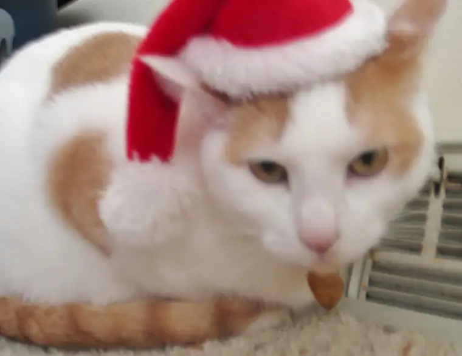

 |
| Skittles “Santa” Salonen |
Meet Skittles, one of our two feline family members. The photo is courtesy of daughter Elizabeth. It’s not the clearest of shots (she’s actually a much better photographer at age ten than this photo shows), but keep in mind that Skittles was a rather uncooperative participant in this particular photo shoot.
In an earlier life, this Santa hat sat atop a stuffed, Christmas version of Kermit the Frog, a toy I claimed in a McDonald’s Muppets promotion years ago. At some point, Kermit went M.I.A., but his hat was stored away with the rest of our Christmas decorations, and when it popped out this past week, I could see the lights going on in Beth’s head. Next thing I knew, the kids had abandoned the tree trimming and were on a mission to chase down the cats to see if the hat was a match. Quite a bit of commotion and drama ensued as Beth and Nick, five, worked to keep the cats steady enough for a photo or two. This was among the best of those they captured.
All this to say, it’s time for a catnap, friends. My December has been incredibly busy work-wise and I’ve felt blessed beyond measure by the projects on which I’ve been able to work. I’ve talked with some incredible people and I can’t wait to share more about them and their stories soon. A couple of my December projects have been published, but there are more slated for January and February issues that will be forthcoming. Life is rolling along at a good and fast pace.
Tonight, though, I find myself short on words, ideas, creativity, and anything else that might be useful to you. So, I’m going to assume that you all are likely in a fairly similar place, trying to pack in way more than is possible in the next couple days and wondering how it’s all going to get done.
With that, I implore you to stop reading now so you can get at all those other very important, life-giving things. But before you go, I want to wish you a very Merry Christmas. If you have a moment on Friday to check back in, I’ll be writing abut Las Posadas on my faith and family blog, Peace Garden Mama.
Alright then….zzzzzzzzzzzzzzzzzzzzzzzzzzzzzzzzzzzzzzzzzzzzzzzzzzzzzzzzzzzzzzzzzzzzzzzzzzzzzzzzzzzzzzzzzzzzzz
Q4U: My favorite line from “Twas the Night Before Christmas” is, “…had just settled down for a long winter’s nap.” What’s yours?